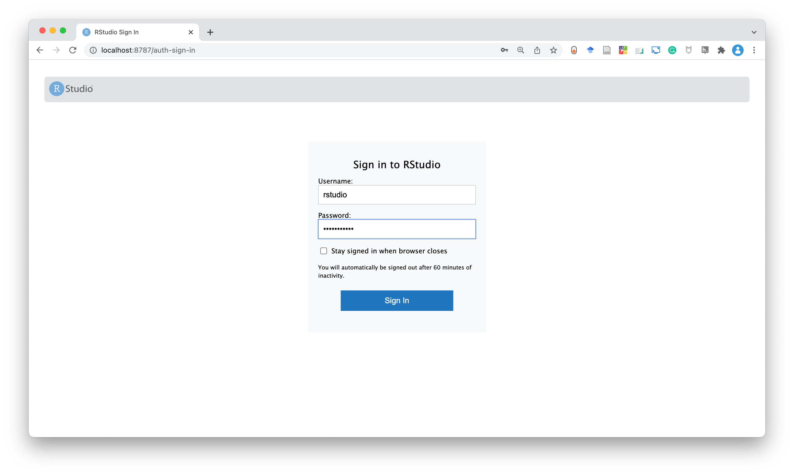
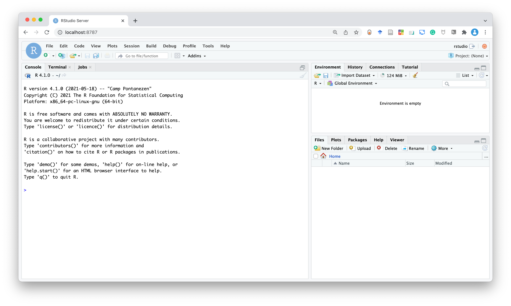
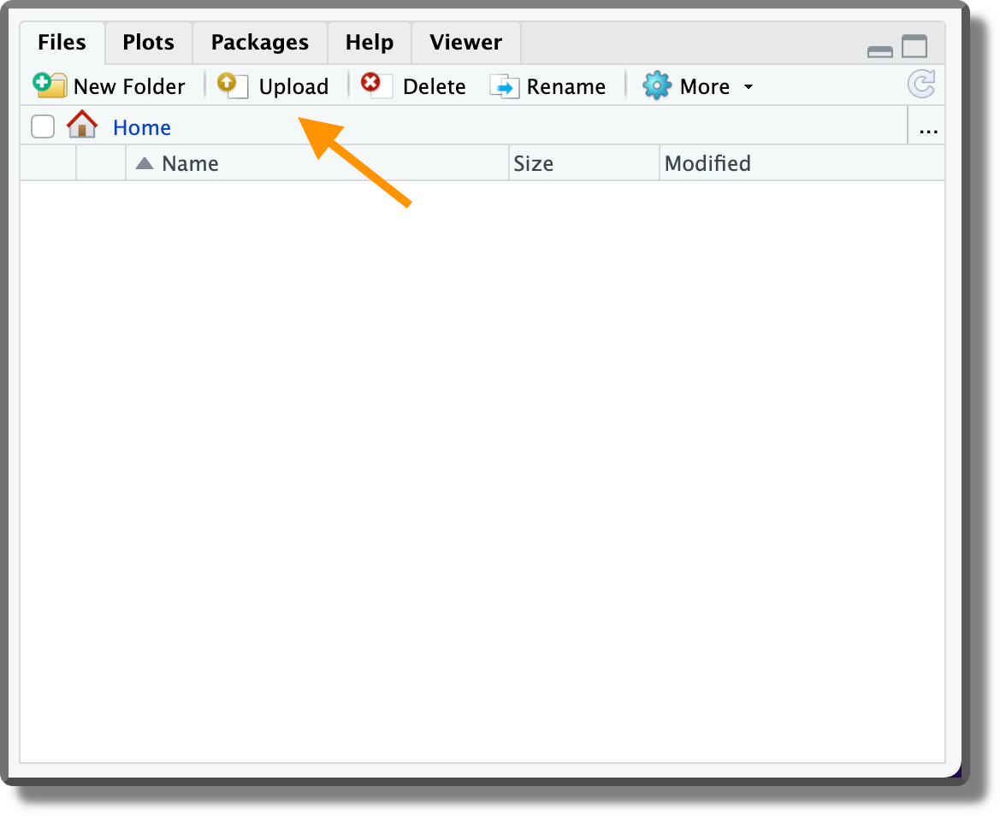
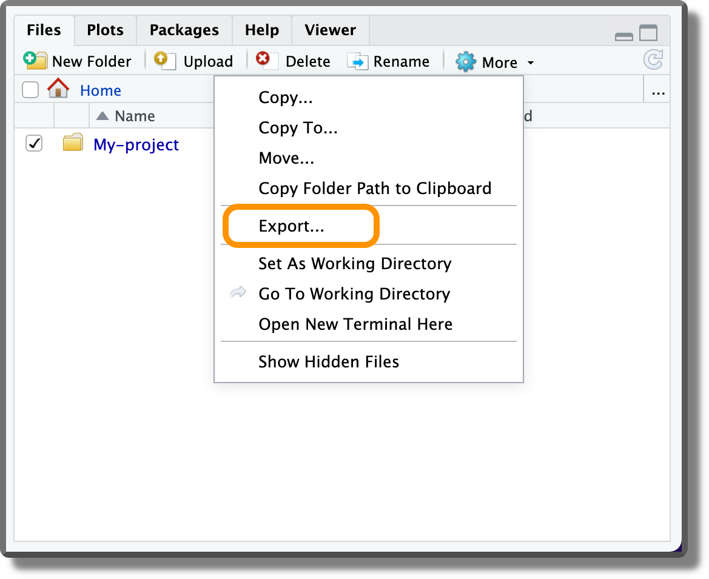

Chapter 13 Rocker
In Chapter 12, we discussed Docker, the Holy Grail of reproducibility. In this chapter, we introduce the Rocker Project which provides Docker Containers for the R Environment.
The Rocker Project (https://www.rocker-project.org/) provides and maintains several Docker images very useful when working with R programming language. Starting from simple images where only base-R is available, Rocker provides gradually more complex images stacking new elements and tools on top of the previous images. The main images stack is composed by,
r-verwith Base-R.rstudioadds RStudio.tidyverseadds tidyverse and devtools packages.verseadds tex and publishing-related packages.
We only need to find the base image that better suits our needs. Moreover, by specifying the version tag we can define the desired version of R. For example, by indicating rocker/rstudio:4.1.0 we obtain the R version 4.1.0.
In addition to this images stack, Rocker provides several other images for specific use cases (e.g, Shiny, Stan, Keras, CUDA). For a list of all available images provided by Rocker, see https://hub.docker.com/u/rocker.
13.1 Rocker Getting Started
Let’s see how we can use R and Rstudio inside a Docker container. To do that we choose the image rocker/rstudio. Note that this image is not based on RStudio Desktop (i.e., our usual desktop application) but is based on RStudio Server (i.e., a web-browser-based interface). Don’t worry, they look almost the same. The main difference is just that we open RStudio Server through our web browser. To dig a little bit deeper regarding the differences between Desktop and Server versions, see https://support.rstudio.com/hc/en-us/articles/217799198-What-is-the-difference-between-RStudio-Desktop-RStudio-Workbench-and-RStudio-Server-.
If we are on macOS or Windows, first, remember to start the Docker daemon by opening the Docker Desktop application. Next, to create a container with the rocker/rstudio image, run the following command,
$ docker run --rm -p 8787:8787 -e PASSWORD=my-password rocker/rstudio:4.1.0In the command we specified several options:
--rm(optional). Remove the container once it exits.-p 8787:8787. Map the port on which we can access RStudio Server from the browser.rocker/rstudiouses the8787port, thus, for consistency, we map on the same port on our machine.-e PASSWORD=my-password. Specify password for RStudio Servers login. The default username is **rstudio``**. Alternatively, we can disable authentication by setting the options-e DISABLE_AUTH=true`.4.1.0. By specifying the image tag, we define the desired R version, in this case, R4.1.0. Remember that it is always recommended to specify the image tag.
The first time we run this command it can take a few minutes (and gigabytes) for Docker to download the rocker/rstudio image from Docker Hub. We will see something similar to this on our terminal,
Unable to find image 'rocker/rstudio:4.1.0' locally
4.1.0: Pulling from rocker/rstudio
7b1a6ab2e44d: Pull complete
34cb923ed704: Pull complete
f2f213d01c8c: Downloading [=======================> ] 200.7MB/295.8MB
7c05c07f0160: Download complete
f72cf49d9462: Download complete
6abf17a5ebed: Downloading [===========================> ] 171.7MB/218.4MB
9a11ac2d5af1: Download complete Once downloaded, the container will be initialized and a few other lines will be printed on the terminal. Now, the terminal will become non-responsive: what is going on? Where is my container? Actually, the container is alive and running, the terminal has become not responsive because we attached it to the container without specifying other commands. Using rocker/rstudio we do not need the terminal but only our web browser.
Running a rocker/rstudio container will leave our terminal not responsive. If we need the terminal we can simply open a new tab or terminal window
Alternatively, we can specify the -d flag to run the container in detached mode (i.e., in a background process) allowing us to continue working on the current terminal (connected to the host machine).
Note that, using the -it rocker/rstudio:4.1.0 bin/bash option, we can connect directly to the container terminal.
To connect to RStudio Server, open the web browser and go to http://localhost:8787/ (or http://127.0.0.1:8787) [TODO: check windows]. Wait! What’s that?
http://localhost (or http://127.0.0.1) is analogous to our home address in computer networks terms. We are saying, connect to our computer at the port 8787, which is the one specified in the Docker command. And, “Knock, knock! Who’s there?”, surprise surprise, RStudio Server is waiting for us. On the login page, use the following credentials:
- username: rstudio
- password: the password we have previously specified

Next, here we are, doesn’t it look familiar? RStudio Server interface looks almost the same as our RStudio Desktop interface.

In RStudio Server we can work as we would normally do in RStudio Desktop. Writing scripts, running code, creating graphs, everything is the same, but remember, we are in a container.
If we close the browser and open a new page at http://localhost:8787/, we will still find all our files and analysis because the container is still running. But what happens if we stop the container? Well as we know (see Chapter 12.3.1), we will lose everything. Running a new container would not allow us to retrieve our files as the container is initialized from the image. Therefore, in RStudio Server we need to manage all our files and data appropriately, see Section 13.2.
To stop the container, go to the terminal window from where we launched the Docker container and press control + C (or run docker stop <container-name>). As we specified the --rm flag, once stopped the container is automatically removed as well. Alternatively, we can use docker rm <container-name>.
13.2 Data Storage
Again, containers are isolated from the host machine, thus all changes made to the files or the results we obtain are available only in the container. If we remove the container, we will lose everything. In Chapter 12.3.1, we introduced bind mounts and volumes to overcome this issue. Let’s see how we can apply them and other solutions for persistent data storage when using rocker/rstudio.
Upload/Export. A naive solution is to upload and export the data at each session form and to the host machine. Of course, this is the worst approach and it is not recommended. However, upload/export functions may still be useful for moving a few files during our working session.
To upload a file, use the “Upload” button in the File RStudio panel. To upload multiple files or a directory, create a zip file first. 
To export a file, select the file and from the “More” menu in the File RStudio panel, click “Export…”. 
Bind Mounts. We can mount a local directory when running the container using the option
-v <host-absolute-path>:<container-absolute-path>. The default user in therocker/rstudioimage is namedrstudio. Therefore, the container absolute path would be/home/rstudio/<path>. For example, to mount the directory/Users/<user-name>/my-project/, we would specify,-v /Users/<user-name>/my-project/:/home/rstudio/my-project/Volumes. We can mount a named volume when running the container specifying the option
-v <name-volume>:<container-absolute-path>. Again, the default user isrstudio, thus we would specify,-v My-volume:/home/rstudio/my-volume/
As always, when we deal with files we also deal with permissions. Mounting bind mounts at the runtime will automatically assign ownerships to the default users (rstudio), thus there should be no problem when modifying and saving files.
On the contrary, named volumes permissions depend on the settings specified when they are created. If mounting a new named volume at the runtime, this will be created but owned by the root user. Therefore, the rstudio user would not be able to modify and save files.
Assigning volume ownership to the rstudio user can be done, for example, by creating a new image using the following Dockerfile,
#---- Dockerfile ----#
# Base image
FROM rocker/rstudio:4.1.0
# Create folder and change owner (user:group)
RUN mkdir /home/rstudio/My-project \
&& chown -R rstudio:rstudio /home/rstudio/my-project
# Define volume
VOLUME /home/rstudio/my-projectNote that it is important to change the directory ownership before the VOLUME instruction. Changes done to the directory (e.g., assign ownership) or to its content after the VOLUME instruction are ignored (see https://docs.docker.com/engine/reference/builder/#volume).
Next, to create a named volume, the first time we run the new image we have to specify the option
-v my-project:/home/rstudio/my-projectDoing this, a new volume named my-project owned by rstudio user will be created.
To summarize, volume permissions are slightly more difficult to manage. If we do not need to care about security, bind mounts are a much easier solution. To learn more about file permission in Rocker containers, see the discussion at https://github.com/rocker-org/rocker/issues/246#issuecomment-316124359.
To learn more about user management (e.g., custom users, run as root group) in Rocker containers, see https://www.rocker-project.org/use/managing_users/.
13.3 Custom Dockerfile
Now we know how to start a container with RStudio Server using rocker/rstudio and how to manage bind mounts (or volumes) for persistent data storage. However, we note that each time we run the container we need to reinstall all the required R packages as they are not available in the base image. Moreover, we can not install dependencies external to the R ecosystem as we have no root permission.
If none of the images provided by Rocker satisfies our requirements, we can create our own custom image. As we have already seen in Chapter 12.2.3, we simply need to define a Dockerfile for our project. A possible Dockerfile may look like the following one,
#---- Dockerfile ----#
# Base image
FROM rocker/rstudio:4.1.0
# Install external dependencies
RUN apt-get update \
&& apt-get install -y curl
# Install R packages
RUN R -e "install.packages('trackdown')"Note the particular combined use of " and ' to correctly specify the command.
Alternatively, we could run an R script (or a bash script) created ad-hoc with the instructions to install all the R packages (or external dependencies). In this case, the Dockerfile will be similar to
#---- Dockerfile ----#
...
# Install R packages
COPY my-install.R /my-install.R
RUN Rscript my-install.RHowever, as we have described in Chapter 11.3, there are better solutions to manage dependencies and guarantee reproducibility. In Section 13.4, we discuss how to manage the workflow introduced in the previous chapters when using Docker containers.
For more suggestions and best practices when using Docker with R, see https://www.r-bloggers.com/2021/05/best-practices-for-r-with-docker/.
There is an alternative approach that allows us to permanently modify an image without changing the Dockerfile. We can commit the changes made (this should sound familiar if we are already using git).
Following this approach, we simply install all the required R-packages from RStudio as we are used to.
In the case of external dependencies, instead, we can overcome the non-root user issue by running the following command docker exec -it <container-name> bin/bash on a new terminal window in our host machine. This command allows us to connect to the container terminal as the root user.
Once we have installed all the required dependencies, we can commit our changes using the command,
docker commit -m "<a descriptive message>" <container-name> <image-name>:<tag>For more details and options, see https://docs.docker.com/engine/reference/commandline/commit/.
This approach, however, is not recommended as it is not reproducible. Of course, we can share our custom image, but colleagues would have a hard time figuring out what exactly the image contains and how it was created. Using a Dockerfile is recommended as it indicates all the instructions allowing reproducibility and facilitating debugging.
13.4 Docker Workflow
Let’s see how we can combine the workflow introduced in the previous chapters together with Docker containers to guarantee results reproducibility.
Of course, the optimal approach will depend on the specific project aims and needs. However, we can think of two main scenarios in which Docker containers are used in our projects:
After the Development. Imagine that we have finished the development of our project and we have already obtained our results. However, as we did everything on our personal machine, we want to use a Docker container to guarantee results reproducibility. Therefore, we create a
Dockerfile, in which we define the project dependencies, add all the required files and set everything to reproduce the results. Next, we re-run the analysis from within the container to obtain the official results. Except for small variations, results obtained from within the container should be essentially identical to those obtained on our host machine.During the Development. Alternatively, we might want to manage the whole development of our project directly from within the container. In this case, the first thing we do is to create a container. During the development, we use RStudio Server provided by Rocker as our preferred integrated development environment (IDE) adding the required dependencies and all the relevant files for our project. Once we obtain the results, we are already sure these will be reproducible from within the container (as long as we correctly followed the workflow). Nevertheless, a second run of the analysis to check that everything flows smoothly never hurts.
Of course, there is not a strict line between the two scenarios and many other solutions are possible. We are free to choose (or create) the solution that better suits our needs. The only important thing to keep in mind is that to guarantee reproducibility, the final results should be obtained by running the whole analysis from within the container.
In most cases, creating the container after the development is fine. Most projects do not have strict requirements that could potentially hinder results replicability (we would obtain essentially the same results on the host machine and from within the container) and rerunning the whole analysis should not be a problem in terms of time and power required. On the other side, following this approach, we have the advantage of working with our familiar tools on the host system. Moreover, we do a double check of the results by re-running the analysis from within the container.
Developing the project directly from within the container could be necessary if there are specific requirements (e.g., OS, specific software, compilers) or to avoid unexpected (rare) issues when re-running the analysis in the container instead of on our host machine. However, managing the development from within the container requires some extra tricks about how to deal with GitHub authentication or the renv caching system.
Let’s clarify everything by considering two examples.
13.4.1 After the Development
Imagine that we structured my-project/ following all recommendations from the previous chapters: we created an .Rproj, Git is used to track our project, the analysis workflow is managed by targets, and dependencies are recorded by renv. At this point, to guarantee results reproducibility, we add a Dockerfile defining a Docker container for our analysis. The project is structured as follows,
My-project/
|-- .gitignore
|-- .Rprofile
|-- _targets.yaml
|-- DESCRIPTION
|-- Dockerfile
|-- my-project.Rproj
|-- README
|-- renv.lock
|-- .git/
|-- analysis/
| |-- _taregts/
| |-- targets-analysis.R
| |-- targets-workflow.R
|-- data/
| |-- raw-data.csv
|-- documents/
| |-- _targets.yaml
| |-- report.Rmd
|-- R/
| |-- my-functions.R
| |-- targets-utils.R
|-- renv/13.4.1.1 Fix R-version
The first step is to fix the R-version used in the analysis and copy all the required files in the image. The Dockerfile will look similar to
#---- Dockerfile ----
FROM rocker/rstudio:4.1.2
# Copy project files
COPY . /home/rstudio/my-project
# Change ownership
RUN chown -R rstudio:rstudio /home/rstudio/In particular, in the Dockerfile:
- First, we define as base image
rocker/rstudio:4.1.2. - Next, we copy all the files from the project folder to the
/home/rstudio/my-projectdirectory in the image. Note that we need to copy all the files required to run the analysis but not the results themselves. Ideally, this command is executed on the project downloaded from GitHub (or other online repositories). As discussed in Chapter 7, we push on the online repository only the code and files required to obtain the analysis using the.gitignorefile to avoid Git tracking the results. Alternatively, we can also use the analogues.dockerignorefile to prevent Docker from copying in the image unwanted files (see Section 12.2.3.4). - Finally, we ensure that all files and folders added inside
/home/rstudio/are owned by therstudiouser. In this way, we avoid any permission issues.
Moreover, we need to provide appropriate instructions in the README to allow other colleagues to reproduce the analysis. In this case, it could be something similar to:
To reproduce the analysis:
Download the project repository at
or by running, git clone <link-repository>Build the image by running,
docker build -t my-project:1.0.0 .Run the container by running,
docker run --rm -p 8787:8787 -e PASSWORD="<your-PW>" my-project:1.0.0In your browser, go to http://localhost:8787 and login to RStudio Server (username: rstudio; PW:
). Open the R project by double-clicking the file
my-project/my-project.Rprojfile you can find in the project. A new R-studio session will open.Run
renv::restore()to install the project’s dependencies (have a coffee, it takes some time).Run
targets::tar_make()to run the analysis usingtargets. (Note that this will properly work because we defined targets script and store locations in the_targets.yamlfile).To compile the report, open
documents/report.Rmdand compile the file clicking theKnitrbutton (or runrmarkdown::render(input = 'documents/report.Rmd')).
Colleagues not familiar with the workflow may require some more details, but following the instructions step by step, they should always be able to reproduce the results.
13.4.1.2 Add R-packages
The previous image would require collaborators to re-install all the dependencies each time they run the container. This is very time-consuming. Moreover, we can not guarantee that all R-packages will be available in the future. A better approach is to execute the renv::restore() step directly in the Dockerfile. To do that, we can use the following instructions,
#---- Dockerfile ----
FROM rocker/rstudio:4.1.2
# Copy project files
COPY . /home/rstudio/my-project
# Install renv
ENV RENV_VERSION 0.15.1
ENV RENV_PATHS_CACHE /home/rstudio/.cache/R/renv
RUN R -e "install.packages('remotes', repos = c(CRAN = 'https://cloud.r-project.org'))"
RUN R -e "remotes::install_github('rstudio/renv@${RENV_VERSION}')"
# Install packages
WORKDIR /home/rstudio/my-project
RUN R -e "renv::restore()"
# Change ownership
RUN chown -R rstudio:rstudio /home/rstudio/Without going into details, first, we install renv specifying the required version. Next, we run renv::restore() to install all the required R-package inside the image. Note that, when opening the project in RStudio Server, it could be still required to run renv::restore() to install the package inside the project. This operation, however, will now require less than a second as packages are linked directly from the cache.
To know more about how to use renv inside a Docker container, see https://rstudio.github.io/renv/articles/docker.html. For more details about renv workflow path customization options, see https://rstudio.github.io/renv/reference/paths.html.
13.4.1.3 Run the Analysis and Report
Finally, we could also include in the Dockerfile the instructions targets::tar_make() and rmarkdown::render(input = 'Documents/Report.Rmd') to run the analysis and compile the report, respectively. In this case, the Dockerfile will looks like as follow,
#---- Dockerfile ----
FROM rocker/rstudio:4.1.2
# Copy project files
COPY . /home/rstudio/My-project
# Install renv
ENV RENV_VERSION 0.15.1
ENV RENV_PATHS_CACHE /home/rstudio/.cache/R/renv
RUN R -e "install.packages('remotes', repos = c(CRAN = 'https://cloud.r-project.org'))"
RUN R -e "remotes::install_github('rstudio/renv@${RENV_VERSION}')"
# Install packages
WORKDIR /home/rstudio/My-project
RUN R -e "renv::restore()"
# Run targets
RUN R -e "targets::tar_make()"
# Render report
RUN R -e "rmarkdown::render(input = 'documents/report.Rmd')"
# Change ownership
RUN chown -R rstudio:rstudio /home/rstudio/Note the particular use of ' and " to correctly define the instructions. Moreover, the command targets::tar_make() will properly work because we defined the targets script and the store locations in the _targets.yaml file.
In this way, collaborators will automatically run the analysis and compile the report when building the image. Our workflow is entirely automatized.
13.4.1.4 Considerations
A downside of the presented approach is that we are required to rebuild the whole image each time we make a change inside the project folder. We can mitigate this issue by modifying the Dockerfile to take advantage of the Docker layers caching system (see Section 12.2.3.1). For this reason, the present approach is recommended once the project development is finished.
Moreover, following the presented approach, we create a specific image for each project. Having too many images could result in a waste of storage space. Of course, we can remove and rebuild the image when needed, but a good idea is also to publish the resulting image on Docker Hub (see Chapter 12.3.3). In this way, collages can download the already built image, and, no matter what, it will be always possible to reproduce our analysis (even if R-packages were removed from CRAN).
As we have seen, we can run the analysis and compile the documents directly in the container allowing us to completely automate our workflow. In the case of PDF, however, we have to deal with LaTeX installation. That may require some extra tricks to make everything work. A good starting point is to use as base image rocker:verse, which already implements tex and publishing-related packages. Moreover, we may require some specific settings in RStudio Server (see https://support.rstudio.com/hc/en-us/articles/200532247-Weaving-Rnw-Files-in-the-RStudio-IDE and https://support.rstudio.com/hc/en-us/articles/200532257-Customizing-LaTeX-Options-in-the-RStudio-IDE) and we may need to learn how the tinytex R-package works (see https://yihui.org/tinytex/).
13.4.2 Rocker as IDE
Finally, let’s say we want to use RStudio Server as our IDE and develop our projects from within a container. In this case, we could simply use one of the Rocker images and mount a bind mount with all the project files (see Chapter 12.3.1). For example, we can use rocker/verse (which has more features) by running the command,
docker run --rm -p 8787:8787 -e DISABLE_AUTH=true \
-v ~/Desktop/My-project:/home/rstudio/my-project \
rocker/verse:4.1.2Opening the browser at http://localhost:8787, we will find the my-project directory inside RStudio Server ready to keep developing our project. Note that ownership of bind mounts (or volumes) mounted at the running time is automatically assigned to the current user, in this case, rstudio.
However, when developing our project from within the container, we will find two main annoying issues: renv cache and GitHub authentication.
13.4.2.1 renv Cache
Packages installed in a session are lost when removing the container. Therefore, we are required to reinstall all R-packages each session, a huge waste of time. An easy solution is to get advantage of the renv cache system. To do that, we need to save renv caches in a bind mount (or a volume) and indicate renv to use that directory by setting the environment variable RENV_PATHS_CACHE. For example, we can create a folder in our host system ~/Docker/renv-cache and use it as a bind mount. To run the container, we use the command
docker run --rm -p 8787:8787 -e DISABLE_AUTH=true \
-v ~/Docker/renv-cache:/home/rstudio/.cache/R/renv \
-e RENV_PATHS_CACHE=home/rstudio/.cache/R/renv \
-v ~/Desktop/my-project:/home/rstudio/my-project \
rocker/verse:4.1.2In this way, running renv::restore() to install the package inside the project will now require less than a second as packages are linked directly from the cache. To know more about how to use renv inside a Docker container, see https://rstudio.github.io/renv/articles/docker.html. For more details about renv workflow path customization options, see https://rstudio.github.io/renv/reference/paths.html.
13.4.2.2 GitHub Authentication
If we try to clone, push, or pull our commits from/to GitHub from within the container, we are required to authenticate at each session. To avoid this, we can add our SSH keys and gitconfig file to the container.
Rather than using our local host computer SSH keys, we can create a new pair of SSH keys and register it to GitHub (see Chapter 8.1.2). In this way, we can set different permissions when forking from the host computer or the Docker container. Next, we save the new SSH keys in a folder ~/Docker/ssh-key and we use it as a bind mount.
We also need a gitconfig file with username, email, and other settings. For example,
#---- gitconfig ----#
[user]
name = <username>
email = <user-email>
[merge]
conflictstyle = diff3and we save the file as ~/Docker/docker-gitconfig.txt. Therefore, we end up having a folder with all the files needed to work with Docker between different sessions. Something like,
~/Docker/
|-- docker-gitconfig.txt
|-- renv-cache/
|-- ssh-keyTo run the container, we use the command
docker run --rm -p 8787:8787 -e DISABLE_AUTH=true \
-v ~/Docker/renv-cache:/home/rstudio/.cache/R/renv \
-e RENV_PATHS_CACHE=home/rstudio/.cache/R/renv \
-v ~/Docker/ssh-key:/home/rstudio/.ssh\
-v ~/Docker/docker-gitconfig.txt:/etc/gitconfig\
-v ~/Desktop/my-project:/home/rstudio/my-project \
rocker/verse:4.1.2Note that here the rocker/verse is necessary, as in this image some Linux packages required to deal with SSH authentication are already installed.
When dealing with credentials and containers, we have to pay a little bit of attention to avoid sharing our private SSH keys with others. Using bind mounts (or volumes) allows us to mount private information at runtime, without including them directly in the image.
Finally, as the commands became quite long, this may be a good occasion to have a look at Docker Compose (see Chapter 12.3.2) or try to create our first Bash script (see https://ryanstutorials.net/bash-scripting-tutorial/).
13.4.2.3 Considerations
Following this approach, we develop our project directly from within the container. The important thing to keep in mind is that, to guarantee reproducibility and avoid strange issues, if we start working from within the container we should consistently develop the project working from the container.
An advantage of this approach is that, except for projects that require specific system requirements (i.e., libraries, software), we can use the same base image to work on many different projects. We simply change the bind mounts to mount at runtime. However, once the project is finished, it is recommended to create a Docker image with all the dependencies already installed to guarantee the reproducibility of the results\(\ldots\)FOREVER.
Rocker
- The Rocker Project
https://www.rocker-project.org/ - Available images
https://hub.docker.com/u/rocker - Best practices
https://www.r-bloggers.com/2021/05/best-practices-for-r-with-docker/ - Permissions Rocker
https://github.com/rocker-org/rocker/issues/246#issuecomment-316124359 - Users Rocker
https://www.rocker-project.org/use/managing_users/
Extra
- Rstudio Server and Desktop
https://support.rstudio.com/hc/en-us/articles/217799198-What-is-the-difference-between-RStudio-Desktop-RStudio-Workbench-and-RStudio-Server - Docker commit
https://docs.docker.com/engine/reference/commandline/commit/ - Rocker and Latex
https://support.rstudio.com/hc/en-us/articles/200532247-Weaving-Rnw-Files-in-the-RStudio-IDE - Rocker and Latex (II)
https://support.rstudio.com/hc/en-us/articles/200532257-Customizing-LaTeX-Options-in-the-RStudio-IDE - tinytex
https://yihui.org/tinytex/